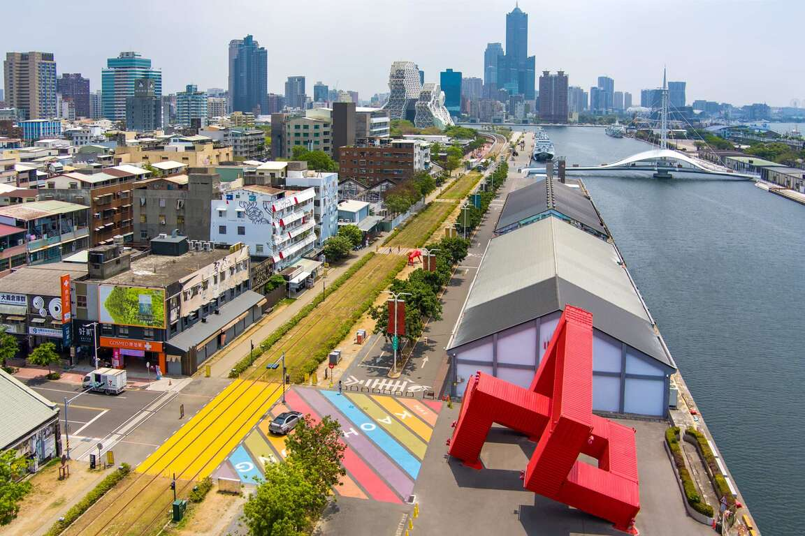

景點介紹
駁二藝術特區的前身為高雄港倉庫，建於1973年，過去儲放魚粉與砂糖，隨著產業轉型，一度遭遺忘閒置；直到2000年高雄市政府因尋找國慶煙火施放地點的機緣下，才讓這些舊倉庫起死回生、開創新生命，見證高雄港的繁華、沒落、再起與轉型。

因倉庫位於高雄港第二號接駁碼頭，藉其意涵而命名為「駁二」有傳承之意。一路走來，有公部門與民間齊心努力，才得以成為現在的「駁二」，成為臺灣最成功的文創園區之一，開啟高雄一股南方藝術的新潮流，帶動高雄城市轉型契機
從過去到現在，駁二藝術特區都是高雄人不可缺少的倉庫群。過去儲放貨物供應港口，現在改頭換面成為藝術家的創作天堂，匯集滿滿的設計與創意能量；過去有港邊載送貨物的西臨港線鐵道，現在則是高雄最熱門的水岸輕軌。
駁二藝術特區向民眾、在這個城市開展創意發想，透過各種公共藝術作品，向民眾互相親近對話，民眾可漫步、搭乘水岸輕軌穿梭其間，感受創意街區裡的悠閒與美學，是連高雄人也愛的創意基地。
經營發展過程
駁二藝術特區經過許多人、許多年的努力，規模從發展初期的2棟倉庫，到現在擁有大勇倉庫群、大義倉庫群和蓬萊倉庫群等共25棟倉庫空間，是高雄重要的城市記憶。
一切源起於2000年，雙十煙火第一次不侷限在台北施放，決定南下高雄綻放，為尋覓適當的放煙火地點，人們發現了港口旁駁二倉庫的存在，一群熱心熱血的藝文界人士於2001年成立駁二藝術發展協會，將駁二規劃成一個獨特的藝術開放空間，催生推動駁二藝術特區作為南部人文藝術發展的基地。
駁二藝術特區透過文化部（當時的文建會）「閒置空間再利用」計畫改頭換面，為高雄開啟藝文、文創的新視窗，成為南部地區的文創重鎮。營運初期以公辦民營的模式，歷經駁二藝術發展協會、樹德科技大學，最後2006年由高雄市文化局接手。
2006年高雄市政府文化局接手至今，將駁二藝術園區定位為，當代藝術與常民美學雙軌併行，將倉庫空間轉變為文創設計、生活藝術、當代藝術、獨立音樂、公共藝術等展演場域。
陸續舉辦了高雄設計節、好漢玩字節、鋼雕藝術節、貨櫃藝術節、高雄人來了大公仔、The Wall駁二音樂演唱會等，匯集來自世界各地的藝術創意，透過一次又一次的展演，激盪出嶄新火花，上演海港城市的魅力文化與生活美學。
現今的駁二藝術特區
駁二藝術特區以大勇區為中心，透過水岸輕軌串連蓬萊區與大義區，構築出獨特的海洋特性的文創氛圍。駁二塔則是登高望大港橋的最佳觀景台，每人每次10元投幣入場。
大勇倉庫群－駁二的故事從這裡開始
共有12棟倉庫，其中C5、P2為駁二最草創時期的兩個展覽場域，這兩棟倉庫目前都仍以靜態展覽為主要用途。陸續加入營運陣容的C1、C2、C4及自行車倉庫，目前主要籌辦實驗性、文創類或當代藝術型態之展覽。

蓬萊倉庫群－復刻百年鐵道的歷史紋理
共有7棟倉庫，自2012年加入駁二營運陣容，以舉辦展演活動和特色餐飲為主，並結合了周邊的哈瑪星鐵道文化園區，大人小孩都喜愛的哈瑪星台灣鐵道館就位在此區。
大義倉庫群－自成一格的職人藝術街區
共有6棟倉庫，為最後納入駁二版圖的區域，主要讓個人營業型態的工作室進駐，作為文化創意產業發展基地，各式各樣的特色小店、公共藝術作品藏在巷弄角落，以及假日的文創市集，是整個藝術園區最有文青味的地方。